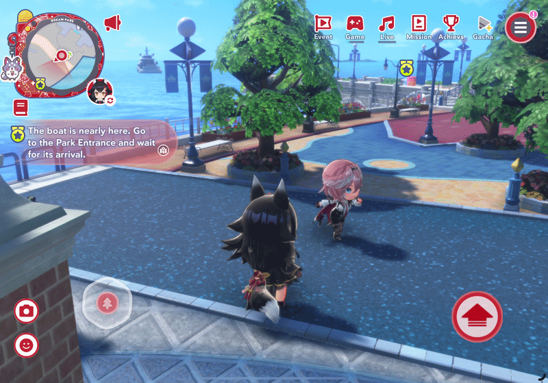
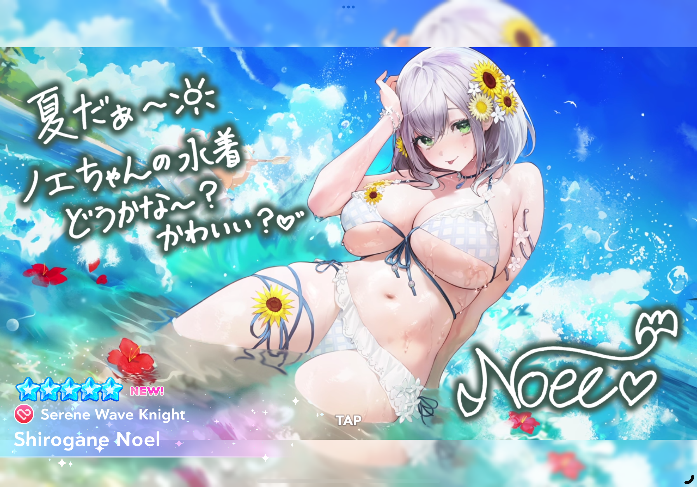
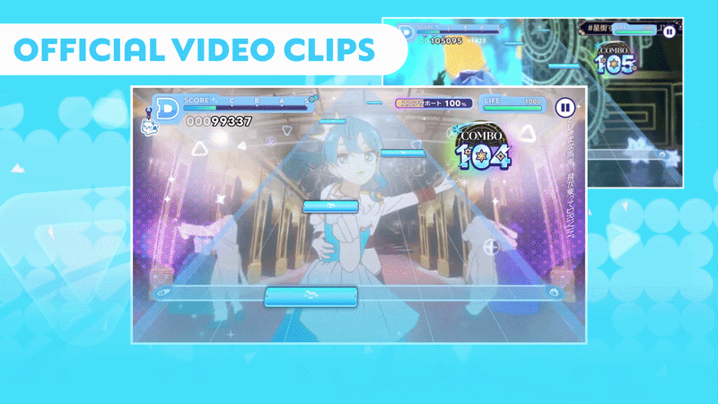
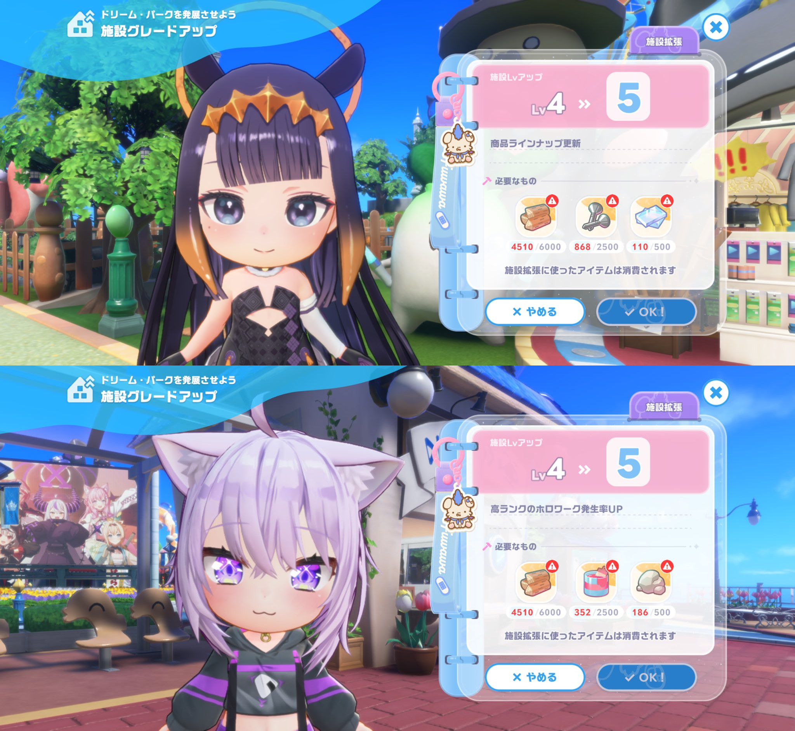
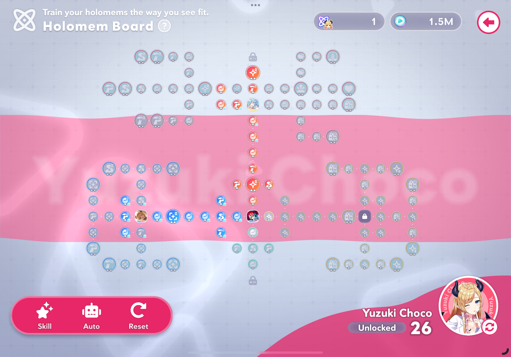
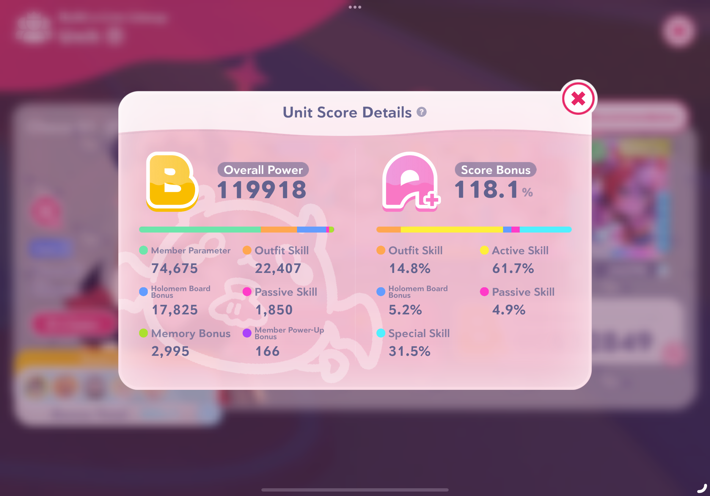

POV: You tell me we’re going to hit legs
If you want the TL;DR then I recommend this game if you either like Hololive music, Project Sekai/Bandori style rhythm games, or gambling. Luckily for the game developers I happen to fall victim to all three vices so here’s my general thoughts on the game. also if u wanna join me then u can install it on iOS, Android, or Steam compatible devices at https://www.hololive-dreams.com/en so please feel free to add me 🥺👉👈
And in case anyone here is wondering, I did NOT install the game for Shirogane Noel’s summer skin no matter WHAT misconceptions you have regarding the Holy Hololive Hobbyist. However, in case anyone is wondering, here is what that particular card looks like if you manage to hit that 1%…

Fun fact they had to add sun beams to censor parts of the art on the App Store
Now let’s dive into the meat and potatoes of what I want to talk about! For a company who has to manage both musical/streamer talent as well as the in-house motion capturing software a music game is the perfect venn diagram. In addition, other successful games in this genre like Project Sekai have paved the way for both monetization routes as well as player expectations. What’s left is the vision of how Hololive will distinguish themselves from other games in the genre and how the developers will execute that vision.
I know it’s pretty ironic to start with this section but I want to give context on what mechanics the game draws inspiration from - Project Sekai (or Hatsune Miku: Colorful Stage). As the main gameplay loop both games rely on consuming time gated resources to accumulate resources via music charts (or beatmaps or songs you get the idea). If you’ve played Piano Tiles or Deemos then this type of gameplay might look familiar.

In addition both games utilize limited time events to encourage players to not only play specific songs but also gamble for limited time characters/skins/alts/etc. Specifically the new characters will ALWAYS have bonus points for their respective events which incentivizes try-hard players to always gamble to hit the 1% chance of the new member. While some people might find this meta-locking tactic predatory, I personally think this pattern is more of a symptom of maintaining interest in any live service game (imagine how lame an update would be if everything added was worse than the status quo). As for the gambling aspect, uh, it could be worse I guess! They could have Mahjong in-
Wait, they have Mahjong in this game. And you have to use in-game currency to enter. And there’s a payout based on ranking. Well at least you can spin up a lobby with 3 other friends and go crazy…
I’m starting to wonder how this game is rated 13+
If you’re not really into literal gambling there’s a few other minigames but in general they serve to accrue resources not normally acquired during the music part of the gameplay loop. While there are ways to convert resources between the two gameplay loops, the scarcity of those avenues lead players to ping-pong between both. Personally it does break up the monotony and I do like how the minigame resources enhance your talent roster which in turn unlock new minigames.

Upgrading Buildings for Better XP (and related mats)
Of course with all of these minigames and buildings you need an overworld to navigate in-between and Hololive Dreams has decided to Genshin-ify the experience! There’s nothing inherently wrong with this and honestly I prefer this style since you can customize your character (heh). This also has the benefit of letting players run into side quests like character unlock missions which leads into the most unique aspect of the game.
Because each talent is an individual streamer (and singer) Hololive Dreams puts a lot more emphasis on each character in two distinct ways (imo). One is financially supporting a specific talent in-game via the membership option and the other is the insane skill tree they introduced. I’m legit stunlocked. Basically you can spec into a talent as the Leader, as one of five Members, as the song Singer, or as a general stat stick.

As you complete more missions for a specific member the tree grows…

How the skill tree (and more) interact with a base roster
Given the monetization model, exquisite polish, and vertical stack, it’s reasonable to assume that Hololive Dreams has everything going for it. I don’t expect it to be anywhere near Hoyoverse products in any aspect but I’m confident that it’ll last many Genshin clones. In any event, I’ve been having a ton of fun just listening to new music and getting better at a new rhythm game (with a lot more visual glamour than I was expecting…). I’ll drop some random gameplay I recorded right before writing this blog and as always, keep your friends close and toes closer~